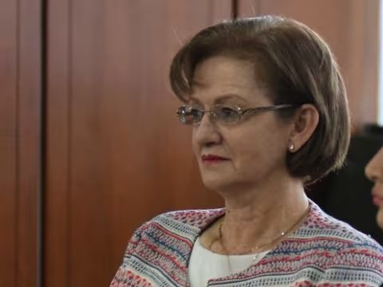
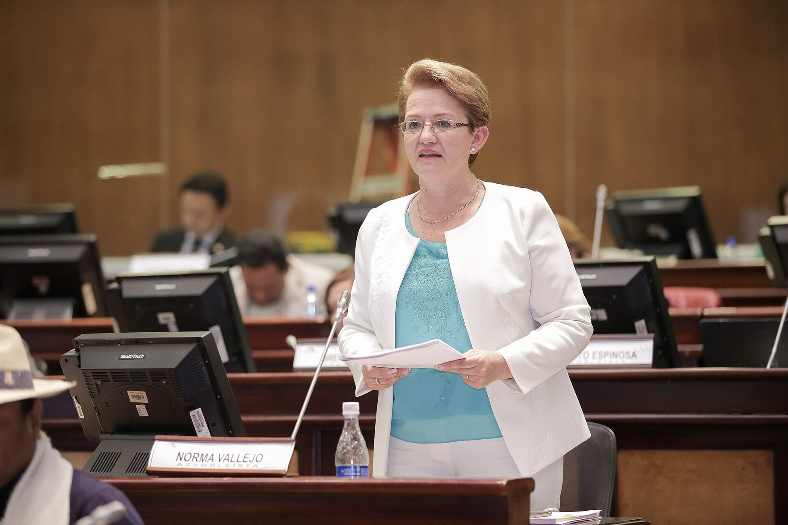
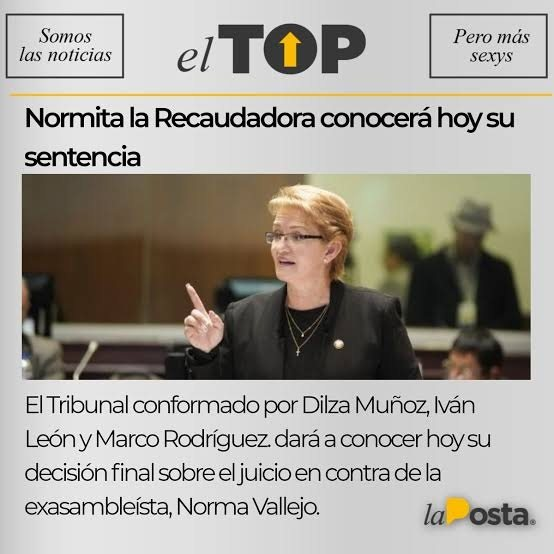

9 oct 2018 · Eduardo León, el abogado de los asesores
Un audio de tres horas. La asambleísta de Alianza País Norma Vallejo le explica a sus colaboradores cómo funciona: el puesto es político, el sueldo no es tuyo, se aporta el diez por ciento en efectivo y así se hace en todos los despachos. La Posta lo publicó el 5 de octubre de 2018. Cuatro días después había una denuncia en la Fiscalía; cinco semanas después, una destitución; dos años después, una condena. El primer diezmo en caer de una Asamblea que cobraba diezmos.
Un asambleísta ecuatoriano tiene un equipo de asesores y asistentes pagados por el Estado. El diezmo consistía en que ese equipo devolviera parte de su sueldo al legislador o al partido para conservar el trabajo. Todos en la Asamblea lo sabían y nadie lo probaba: la presidenta de la Asamblea, Elizabeth Cabezas, lo llamó rumor de pasillo. El 4 de septiembre de 2018 Pablo Santillán, asesor del asambleísta Fabricio Villamar, de CREO, anunció que estaba recopilando casos de asesores que denunciaban el cobro de cuotas de sus sueldos. Una de las primeras en hablar en el programa de entrevistas de La Posta fue la exasesora Andrea Utreras, que se peleó con el mundo para que dejaran de llamarlo rumor y empezaran a llamarlo vergüenza nacional.


El 5 de octubre de 2018 La Posta publicó extractos del audio. En una conversación de casi tres horas con sus colaboradores, Norma Vallejo Jaramillo, asambleísta de Alianza País por Pichincha e integrante de la Comisión de los Derechos de los Trabajadores, explica el funcionamiento: el puesto es político, un cargo, no es que el sueldo sea tuyo; se aporta el diez por ciento del salario para el movimiento; se cobra en efectivo; así se hace en todos los despachos. Los exasesores contaron que se empezaba con 150 dólares, luego 250, luego 300, y seguía subiendo: en algunos casos la cuota llegó a la mitad del sueldo. Una persona de Alianza País pasaba por el despacho a cruzar cuentas con el equipo, según la denuncia. Y había extras: pasajes aéreos fuera del país, gastos de matrimonio, lo que hiciera falta. Una tarjeta de crédito humana, se dijo en la entrevista con el abogado Eduardo León, que lo resumió así: cubrir gastos personales de la asambleísta y de su familia.
Esto no se trata de un cargo político. Ella parte de la premisa de que los sueldos no son tuyos. ¿De quién son, entonces? De ella. De Alianza País.
Eduardo León, abogado de los denunciantes, en el programa de entrevistas de La Posta, 9 de octubre de 2018
Vallejo no contestó las llamadas de La Posta ni de ningún medio. Escribió una carta a Gustavo Baroja, secretario de Alianza País en Pichincha, pidiendo rendir cuentas ante la comisión de ética del partido, no ante la Asamblea ni ante los ciudadanos; solo dijo que estaría en la Fiscalía cuando la denunciaran. Alianza País emitió un comunicado sin firma en el que, en lugar de respaldar a los asesores, reprochaba los ataques contra el movimiento y preguntaba cómo se financiaban los otros partidos; varios asambleístas del bloque dijeron a Boscán que no sabían quién lo había convocado. En el audio Vallejo menciona a un tal Moisés, un operador sin cargo oficial al que atribuye conseguir los puestos; según fuentes del partido, estaba detrás del comunicado. El 9 de octubre la Fiscalía reactivó el caso y convocó a Andrea Utreras, la primera denunciante, y los abogados Eduardo León y Felipe Rodríguez anunciaron para esa mañana una denuncia formal por concusión, un delito contra la administración pública que no prescribe, y también por enriquecimiento ilícito, defraudación tributaria y perjurio, en nombre de cuatro exasesores que ya no trabajaban con ella. La entrega no era voluntaria, explicó León: te advertían que había otras personas para el puesto. Vallejo dijo: no soy recaudadora, busquen debajo de mis colchones. Nadie iba a encontrar nada ahí, respondió el abogado: todo se cobraba en efectivo.
La Asamblea tenía un problema: no existía una causal para destituir a un legislador por cobrar diezmos. Primero aprobó por unanimidad una resolución que pedía a la UAFE, la Contraloría y la Superintendencia de Bancos revisar las cuentas de los legisladores y prohibía despedir a los denunciantes; La Posta la llamó letra muerta, porque todo se cobraba en efectivo. Villamar impulsó una norma para la destitución. La investigación legislativa encontró otra cosa: Vallejo había gestionado cargos públicos para al menos una exasesora. Por eso, el 13 de noviembre de 2018, el Pleno la destituyó con 89 votos. Su reemplazo asumió la curul. Fue la primera caída de un escándalo que alcanzó a más de veinte legisladores: Ana Galarza, de CREO, fue destituida el 7 de febrero de 2019 con 91 votos; la exvicepresidenta María Alejandra Vicuña fue denunciada el 27 de noviembre de 2018 por cobrar entre 300 y 1.400 dólares a sus asesores cuando era asambleísta; Karina Arteaga y Nívea Vélez también fueron procesadas. Los cobros iban de 100 a 2.800 dólares mensuales, entre el 10 y el 90 por ciento del sueldo. La aprobación de la Asamblea cayó del 30 al 14 por ciento.
El caso penal avanzó. La Fiscalía acusó con 25 pruebas y pidió la pena máxima. El 14 de julio de 2020 un tribunal de la Corte Nacional de Justicia declaró culpable a Vallejo de concusión: exigió contribuciones mensuales de entre 150 y 1.000 dólares a su equipo a cambio de mantenerlo en el cargo, recaudó unos 20.305 dólares y los usó para pagar deudas personales, gastos de oficina, eventos y aportes a Alianza País. La pena era de cinco años; por atenuantes quedó en un año, más reparación e impedimento de candidatura. Ella pidió la suspensión condicional. El 7 de enero de 2021 la apelación subió la pena a dos años.

El 18 de julio de 2022 la casación, con los jueces Byron Guillén, Luis Rivera y Mauricio Espinoza, ratificó los dos años pero aceptó suspender la pena: Vallejo debe vivir en el domicilio declarado, no salir del país sin permiso, presentarse cada ocho días ante la Corte, pagar la reparación en seis meses y no cometer nuevas infracciones. No fue a prisión. El 5 de marzo de 2026, en cumplimiento de la sentencia, ofreció disculpas públicas ante el Pleno de la Asamblea Nacional por telemática, sin mostrar el rostro.
Los demás también cayeron. Vicuña fue condenada el 30 de enero de 2020 a un año por concusión, con una indemnización de 173.180 dólares y el comiso de un inmueble. Nívea Vélez fue la tercera sentenciada. La palabra diezmo dejó de ser rumor y pasó al código de la política ecuatoriana. Vallejo no volvió a la función pública.
Actualizado el 5 de septiembre de 2026
Un asesor de Villamar recopila denuncias de cobros a colaboradores.
La presidenta de la Asamblea minimiza las denuncias. Utreras, Villamar y Jeannine Cruz las empujan.
La Posta publica a Vallejo explicando el diez por ciento en efectivo.
Eduardo León y Felipe Rodríguez denuncian por concusión. La Fiscalía convoca a la primera denunciante.
89 votos, por gestionar cargos públicos.
La exvicepresidenta es denunciada por el mismo delito.
Destituida con 91 votos.
Un año por concusión.
Un año por concusión. 20.305 dólares recaudados.
La pena sube a dos años.
Dos años ratificados, pena suspendida con condiciones.
Vallejo pide perdón ante el Pleno, sin mostrar el rostro.
Asambleísta de Alianza País por Pichincha. La voz del audio.
Asambleísta de CREO. Su despacho recogió las primeras denuncias y pidió la destitución.
Exasesora legislativa. La primera en denunciar los diezmos en La Posta.
Abogados de los cuatro exasesores denunciantes.
Asambleísta de CREO por Tungurahua, señalada por diezmos.
Exvicepresidenta. Cobraba a sus asesores cuando era asambleísta.
Fotos vía Wikimedia Commons. Ana Galarza: Fotografías:Alberto Romo/Asamblea Nacional del Ecuador (CC BY-SA 2.0); María Alejandra Vicuña: Asamblea Nacional del Ecuador from QUito, Ecuador (CC BY-SA 2.0).
Dijo que no era recaudadora, que buscaran debajo de sus colchones, y pidió rendir cuentas ante la comisión de ética de Alianza País. Solo ofreció ir a la Fiscalía cuando la denunciaran. No respondió a La Posta.
Emitió un comunicado sin firma en el que reprochaba los ataques contra el movimiento y preguntaba cómo se financiaban los otros partidos. Después abrió un expediente disciplinario.
No se pronunció en las 72 horas siguientes a la publicación del audio.
Sostuvo que se usó un audio no judicializado para destituir a Vallejo, algo que Ecuador Chequea calificó como cierto.
doña esos pies bien por andar visitando a testigos protegidos en la cárcel los diezmos han revivido tras la publicación de un audio en la posta donde escuchamos a la sangre isla norma vallejo de alianza país en una conversación realmente a nauseabunda explicar el funcionamiento del cobro de los mismos decía normita que por cierto normita estamos esperando que te contacte con la posta para dar su versión te esperamos …
Leer la transcripción completaTranscripciones de los subtítulos automáticos de cada programa. No están corregidas a mano: sirven para buscar una frase y llegar al minuto exacto del video, no como cita textual literal.
La casación suspendió la pena. Vallejo cumple condiciones.
Ocho años después del audio, la disculpa pública.
La Posta publicó extractos del audio en octubre de 2018; los denunciantes tenían las casi tres horas de grabación. El video alojado en este sitio es la entrevista con el abogado de los denunciantes del 9 de octubre de 2018. Boscán sostuvo entonces que la sanción política no debía esperar a la judicial: la destitución llegó veinte meses antes que la sentencia.